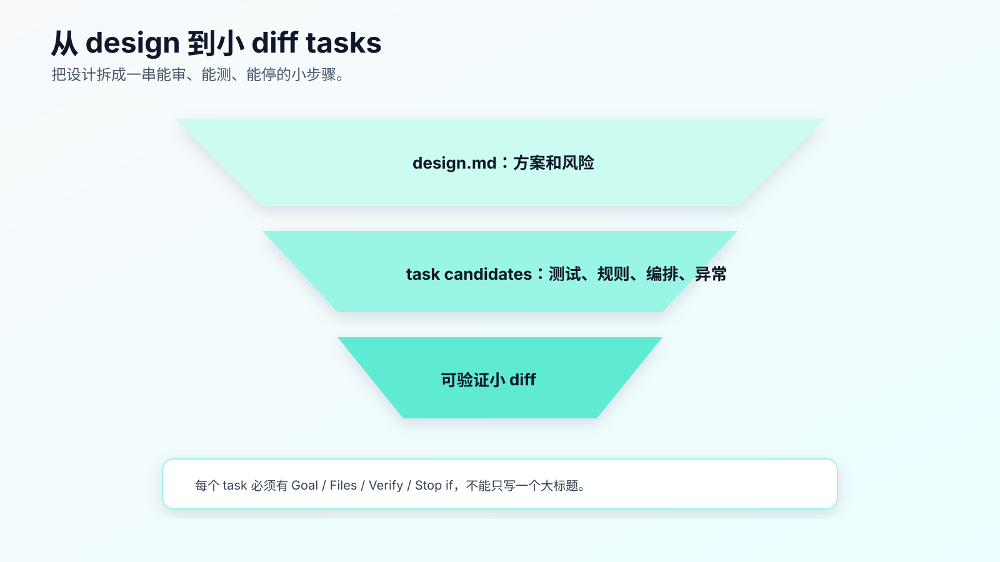
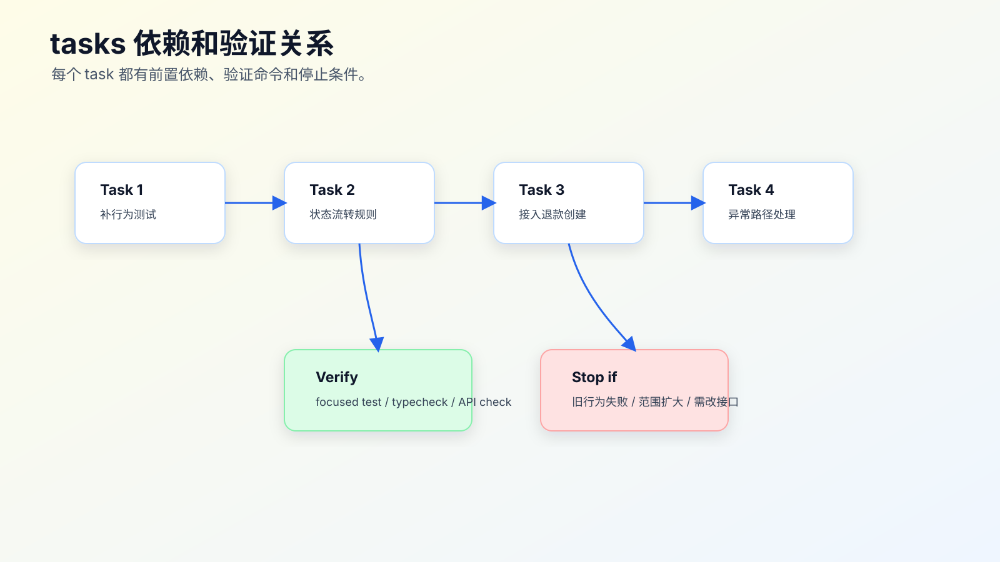

tasks.md 怎么拆：把复杂需求变成小 diff
requirements.md 写清行为，design.md 写清方案，最后还不能直接让 AI 一口气实现。
复杂需求真正落地时，风险集中在 diff 粒度。
一个任务写成：
- 完成订单取消改退款流程。
Agent 会把测试、状态机、退款请求、接口兼容、前端展示、错误处理混在一起改。最后可能测试能跑，但 diff 难审、失败难定位、回滚也麻烦。
tasks.md 的目标，是把设计拆成一串可审查、可验证、可停下来的小 diff。

好 task 的标准
一个好 task 要满足五个条件：
单一目的
明确文件范围
可验证
可审查
失败后能停
坏 task：
- 实现订单取消退款。
好 task：
1. Add failing tests for paid order cancellation.
- Files: `test/order/cancel.test.ts`
- Verify: focused test fails only on paid path.
2. Add paid -> refund_requested transition.
- Files: `src/order/status-transition.ts`
- Verify: focused status transition tests pass.
3. Wire refund request creation in cancel service.
- Files: `src/order/cancel-service.ts`
- Verify: order cancel tests pass.
这不是为了流程漂亮，而是为了让 AI 一次只改一个能审的东西。
tasks.md 不是 todo list
普通 todo list 只写要做什么。tasks.md 必须写：
- 做什么。
- 改哪些文件。
- 为什么现在做。
- 怎么验证。
- 依赖哪个前置任务。
- 失败时是否停止。
例如：
## Task 1: Add regression tests
Goal:
- Lock pending, paid, shipped cancel behavior before implementation.
Files:
- `test/order/cancel.test.ts`
Steps:
- Add pending order cancel test.
- Add paid order cancel test expecting `refund_requested`.
- Add shipped order cancel test expecting existing rejection.
Verify:
- `npm test -- order-cancel`
- Expected before implementation: paid path fails, existing paths pass.
Stop if:
- Existing pending or shipped behavior fails before implementation.
这才是 AI 可以执行的 task。
拆任务的基本顺序
复杂需求通常按这个顺序拆：
1. 锁定现有行为和新行为
2. 修改核心规则
3. 接入编排流程
4. 补异常路径
5. 扩大验证范围
6. 更新文档或规则
这个顺序不是固定，但它有一个原则：先让测试和证据出现，再让实现跟上。
订单取消改退款可以拆成：
# Tasks
## 1. Add behavior tests
- pending cancel remains canceled
- paid cancel becomes refund_requested
- shipped cancel remains rejected
- duplicate paid cancel does not create duplicate refund
Verify:
- `npm test -- order-cancel`
- Expected before implementation: paid and duplicate paid cases fail.
## 2. Add status transition rule
- Add paid -> refund_requested.
- Keep pending -> canceled.
- Keep shipped rejection.
Verify:
- status transition focused tests pass.
## 3. Wire refund request creation
- Use transition result to create refund request.
- Do not change payment callback.
Verify:
- order cancel service tests pass.
## 4. Add failure handling
- If refund request creation fails, order remains paid.
Verify:
- refund failure test passes.
## 5. Run broader verification
- `npm test -- order`
- API response shape compatibility check.
每个 task 都有边界和验证。
任务粒度怎么判断
一个 task 太大，会出现这些信号：
- 涉及多个业务规则。
- 同时改测试、实现、UI、接口、数据。
- 验证命令不止一个层级。
- 失败后不知道是哪一部分导致。
- review 时很难一句话说明 diff。
一个 task 太小，也会有问题：
- 每步只有机械改名。
- 验证成本高于改动价值。
- 任务之间没有独立意义。
比较合适的粒度是：一个 task 完成后，diff 能单独解释，验证能单独运行。
例如：
补 paid cancel 测试
这是合理 task。
新增一个 import
太小，除非它是一次机械迁移里的可验证步骤。
完成退款流程和前端展示
太大。
把坏 tasks 改成可执行 tasks
看一个常见坏版本：
# Tasks
- 实现后端退款逻辑
- 改前端展示
- 补测试
- 自测
这份清单几乎不能用。它没有文件范围，没有顺序，没有停止条件，也没有说明哪些测试先失败、哪些测试后通过。
可以改成：
# Tasks: paid order cancellation enters refund flow
## Task 1: Lock current and expected cancel behavior
Goal:
- Add behavior tests before implementation.
Files:
- `test/order/cancel.test.ts`
Verify:
- `npm test -- order-cancel`
Expected:
- pending and shipped cases pass.
- paid and duplicate paid cases fail before implementation.
Stop if:
- pending or shipped cases fail before implementation.
## Task 2: Add paid cancel transition
Goal:
- Make paid cancellation return `refund_requested`.
Files:
- `src/order/status-transition.ts`
Verify:
- `npm test -- order-cancel`
Stop if:
- implementation requires public response shape change.
## Task 3: Create refund request from cancel flow
Goal:
- Wire refund request creation after paid cancel transition.
Files:
- `src/order/cancel-service.ts`
- `src/refund/refund-request-service.ts`
Verify:
- `npm test -- order-cancel`
Stop if:
- payment provider callback logic must change.
这个改写的重点不是把格式变漂亮，而是让 Agent 每次只拿到一个可执行边界。
好的 tasks 读起来应该能回答三个问题：
这一步为什么现在做？
这一步最多允许改哪里？
这一步完成后用什么证据证明？
如果回答不了，就继续拆。
每个 task 都要写 Stop 条件
很多 AI Coding 失控，是因为任务失败后继续往下做。
tasks.md 里应该写 Stop if：
Stop if:
- Existing pending cancel test fails before implementation.
- Public API response shape must change.
- New dependency appears necessary.
- Generated file needs manual edit.
- Design assumption conflicts with current code.
Stop 条件不是消极。它是保护边界。
如果 Task 1 发现 pending 订单旧测试本来就失败，不能继续 Task 2。要先分类：baseline failure 还是需求理解错误。
先处理 baseline failure
真实仓库里，测试不一定一开始就是绿的。Agent 执行 Task 1 时，如果发现旧测试已经失败，不能把失败混进当前需求。
tasks.md 里可以写：
Baseline check:
- Run `npm test -- order-cancel` before adding new tests.
- If existing pending or shipped cancellation tests fail, stop and report baseline failure.
- Do not modify implementation while classifying baseline failure.
baseline failure 有三种常见情况。
第一种，和当前需求无关。
比如订单列表快照测试因为文案变化失败，但取消逻辑测试是绿的。可以记录为 unrelated baseline failure，并说明当前 task 只跑 focused tests。
第二种，和当前需求相关。
比如 pending cancel 旧测试已经失败，这时不能继续实现 paid cancel。要先修复或确认现有行为，否则新需求没有稳定基线。
第三种，测试环境问题。
比如本地数据库没启动、外部服务 mock 缺失、依赖版本不一致。此时要补环境说明或替代验证，不能让 Agent 把业务代码改到测试通过。
baseline failure 的处理方式要写进报告：
Baseline:
- `npm test -- order-cancel` failed before code changes.
- Failure: pending cancel expected `canceled`, got `pending`.
- Classification: related baseline failure.
- Action: stop before Task 2.
这一步很关键。否则 AI Coding 很容易把“修旧问题”和“做新需求”搅在一个 diff 里。
任务依赖和验证关系

tasks 不是平铺列表。它们有依赖。
比如：
Task 2 依赖 Task 1 的测试。
Task 3 依赖 Task 2 的状态结果。
Task 4 依赖 Task 3 的退款创建路径。
Task 5 依赖前面所有改动。
可以在 tasks.md 里写：
## Dependencies
- Task 2 must not start until Task 1 tests are added.
- Task 3 must not start until status transition tests pass.
- Task 5 must run only after all focused tests pass.
这能阻止 Agent 一口气做完。
让 AI 只执行一个 task
写好 tasks.md 后，不要说：
按 tasks.md 实现。
这会让 Agent 一次性跑完整个清单。
一次只授权一个 task：
只执行 `tasks.md` 的 Task 1。
要求：
- 不改实现代码。
- 不改 Task 1 以外文件。
- 跑指定验证命令。
- 输出 diff 摘要和测试结果。
- 完成后停止。
Task 1 完成后，人看 diff 和命令，再授权 Task 2。
对复杂需求，这种节奏比“一次全做完”更快。因为你少了大量返工。
测试先行怎么写进 tasks
不是每个任务都必须严格 TDD，但复杂需求建议先让行为测试出现。
Task 可以这样写：
## Task 1: Add failing regression tests
Goal:
- Convert requirements into executable behavior checks.
Files:
- `test/order/cancel.test.ts`
Expected before implementation:
- pending and shipped cases pass.
- paid cancellation case fails because current behavior returns `canceled`.
- duplicate paid cancellation case fails because duplicate refund prevention is not implemented.
Stop if:
- pending or shipped cases fail before implementation.
这能让 AI 明确：测试失败不是坏事，预期失败是为了锁住需求。
tasks 里的验证命令怎么写
验证命令不能只写“run tests”。
要写具体命令和覆盖范围：
Verify:
- `npm test -- order-cancel`
- covers pending, paid, shipped cancel behavior
- `npm test -- order`
- covers broader order module impact
- API compatibility check
- ensures response shape unchanged
如果命令不能本地跑，也要写：
Not locally verifiable:
- Real payment provider callback.
Manual check:
- staging callback path after merge candidate.
不要让 Agent 自己选择最容易通过的命令。
回滚边界怎么写
复杂需求里，tasks 还要考虑回滚。
Rollback:
- Task 2 can be reverted independently if status transition tests fail.
- Task 3 should not be merged without Task 2.
- No database migration in this change.
- No public API response shape change.
回滚边界让任务更可审。
如果一个 task 无法单独回滚，说明它可能太大或依赖没写清。
task、commit 和 PR 不是一回事
很多人会把 tasks.md 误解成提交清单。实际生产里，task、commit、PR 的粒度可以不同。
task 是给 Agent 执行的最小授权单位。 commit 是本地历史记录单位。 PR 是给 reviewer 审查和交付的单位。
一个复杂需求可能是：
Task 1: 补行为测试
Task 2: 改状态规则
Task 3: 接退款请求
Task 4: 补失败处理
Task 5: 跑扩大验证
Commit 1: tests for order cancel behavior
Commit 2: implement paid cancel refund flow
Commit 3: handle refund request failure
PR 1: paid order cancellation enters refund flow
也可能拆成两个 PR：
PR 1: backend status and refund request behavior
PR 2: frontend display for refund_requested
什么时候拆 PR？
- 前后端可以独立上线。
- 数据迁移需要先合并。
- reviewer 不同。
- 风险需要分阶段灰度。
- 一个 PR 已经大到无法在合理时间内审完。
不要机械要求一个 task 一个 commit，也不要把十几个 task 塞进一个难审 PR。真正的目标是让每个交付单位可理解、可验证、可回滚。
常见错误
错误一：tasks 只是大标题。
“实现后端”“实现前端”“补测试”都太大。要写文件范围和验证。
错误二：没有 Stop 条件。
失败后 Agent 会继续改，污染 diff。
错误三：任务顺序错。
先实现再补测试，容易让测试配合实现，而不是锁定需求。
错误四：一个 task 混多个层级。
状态机、接口、前端展示、文档更新不要混在同一个 task。
错误五：没有验收命令。
没有验证命令，task 完成只剩口头声明。
一个完整 tasks 示例
# Tasks: paid order cancellation enters refund flow
## Task 1: Add behavior tests
Goal:
- Lock pending, paid, shipped and duplicate paid cancel behavior.
Files:
- `test/order/cancel.test.ts`
Verify:
- `npm test -- order-cancel`
Expected before implementation:
- pending and shipped cases pass.
- paid and duplicate paid cases fail.
Stop if:
- pending or shipped cases fail.
## Task 2: Add status transition rule
Goal:
- Add paid -> refund_requested transition.
Files:
- `src/order/status-transition.ts`
Verify:
- `npm test -- order-cancel`
Stop if:
- public API response shape must change.
## Task 3: Wire refund request creation
Goal:
- Create refund request when transition result is refund_requested.
Files:
- `src/order/cancel-service.ts`
- `src/refund/refund-request-service.ts`
Verify:
- `npm test -- order-cancel`
Stop if:
- refund request creation requires payment callback changes.
## Task 4: Add failure handling
Goal:
- Keep order paid if refund request creation fails.
Files:
- `src/order/cancel-service.ts`
- `test/order/cancel.test.ts`
Verify:
- `npm test -- order-cancel`
## Task 5: Broader verification
Verify:
- `npm test -- order`
- API response shape compatibility check
Report:
- changed files
- commands and results
- residual risk
这份 tasks 可以直接驱动 Agent 小步执行。
每个 task 完成后要输出什么
让 Agent 执行 task 时，不要只让它说“完成”。要让它输出可审查结果。
可以固定要求：
完成后停止，并输出：
1. 改了哪些文件。
2. 每个文件为什么改。
3. 执行了哪些验证命令。
4. 命令结果是什么。
5. 是否触发 Stop 条件。
6. 剩余风险或需要人确认的问题。
对应到 Task 2，输出应该像这样：
Task 2 report:
Changed files:
- `src/order/status-transition.ts`: add paid -> refund_requested transition
- `test/order/status-transition.test.ts`: update expected transition behavior
Verification:
- `npm test -- order-cancel` PASS
Stop conditions:
- public API response shape did not change
- no payment callback changes required
Residual risk:
- frontend display for `refund_requested` not covered in this task
这个报告不需要长，但必须有证据。否则你只能相信 Agent 的口头总结。
并行任务要非常谨慎
Agent 能并行做事，但不是所有 tasks 都能并行。
可以并行的任务通常满足：
- 文件范围不同。
- 依赖关系弱。
- 验证命令互不影响。
- 失败后不会污染同一段代码。
比如：
Task A: 后端订单状态测试
Task B: 前端状态文案展示
如果两者只共享接口契约，且契约已经在 requirements/design 中固定，可以并行。
不适合并行的任务：
Task 1: 修改状态迁移规则
Task 2: 基于新状态接退款创建
Task 3: 基于退款创建补失败处理
这些任务有明确顺序。并行只会制造冲突和重复修复。
个人 AI Coding 里，我更建议默认串行。只有当任务边界特别清楚、文件不重叠、验证互不影响时，再让多个 Agent 并行。
task 审查协议
每执行完一个 task，先审四件事，再授权下一步。
第一，diff 是否只覆盖 task 范围。
如果 Task 1 只要求补测试，结果改了实现，直接退回。测试先行任务最容易被 Agent “顺手修掉”。
第二，验证命令是否真的跑了。
不要接受“应该通过”。要看命令、结果和失败输出。如果命令没法跑，要写清原因和替代验证。
第三，是否触发 Stop 条件。
Stop 条件被触发时，不要让 Agent 继续解释着往下做。先更新 requirements 或 design，再重拆 tasks。
第四，是否产生新风险。
比如实现时发现需要新增状态值，老客户端可能不识别。这不是 Task 2 自己可以决定的范围，应该回到 design 的 Compatibility。
可以直接把这段话作为执行要求：
执行 Task 3。完成后停止。
如果发现需要改 Task 3 以外的文件、需要新依赖、需要改 public API response shape，先报告，不要继续实现。
这类授权语句比“按 tasks 做”更适合真实项目。
任务失败要分类，不要马上让 Agent 猜修法
当一个 task 失败时，先分类，再决定下一步。
常见失败类型有五种。
| 失败类型 | 例子 | 处理 |
|---|---|---|
| 预期失败 | 新增 paid cancel 测试失败 | 可以进入实现 task |
| 基线失败 | 旧 pending 测试先失败 | 停止，先确认现有行为 |
| 范围冲突 | 实现需要改 public API | 回到 design |
| 环境失败 | 数据库或 mock 没启动 | 修验证环境或记录替代验证 |
| 设计错误 | Current Flow 与源码不符 | 更新 design 和 tasks |
不要把所有失败都交给 Agent “继续修”。它可能为了让命令通过，改掉测试、扩大范围，或者绕过真正的设计问题。
可以这样要求：
如果验证失败，先分类失败原因。
只有预期失败或 task 范围内的实现错误可以继续修。
如果是基线失败、范围冲突、环境失败或设计错误，停止并报告。
这条规则会明显减少大 diff 失控。
tasks 怎么映射到 PR 描述
任务做完后，PR 描述不要只写“完成订单取消改造”。应该把 tasks 的执行证据压缩进去。
What changed:
- paid order cancellation now creates refund request state
- pending and shipped cancellation behavior unchanged
- duplicate paid cancellation does not create duplicate refund request
Spec:
- `docs/specs/order-cancel-refund/requirements.md`
- `docs/specs/order-cancel-refund/design.md`
- `docs/specs/order-cancel-refund/tasks.md`
Task execution:
- Task 1 behavior tests: done
- Task 2 status transition: done
- Task 3 refund request wiring: done
- Task 4 failure handling: done
- Task 5 broader verification: done
Verification:
- `npm test -- order-cancel` PASS
- `npm test -- order` PASS
Not changed:
- payment provider callback
- admin batch cancellation
- historical data migration
这段 PR 描述给 reviewer 的不是过程流水账，而是审查索引。reviewer 可以沿着 requirements 看行为，沿着 design 看方案，沿着 tasks 看执行和验证。
本地验证、CI 和人工审查各管一段
tasks.md 里的验证命令不能替代 CI，也不能替代人工审查。它们负责的东西不同。
本地验证适合快速确认 task 是否做对：
focused unit tests
typecheck
lint
small integration tests
browser smoke test
CI 负责更完整的自动化检查：
full test suite
build
package checks
e2e tests
security or dependency checks
required status checks
人工审查负责自动化覆盖不到的判断：
需求是否理解正确
diff 是否越界
设计层级是否合理
兼容性风险是否被接受
残余风险是否写清
Agent 可以运行本地命令，可以读取 CI 失败日志，也可以辅助做 review checklist。但它不能替你承担业务决策。
所以 tasks 的最后一步不要只写“跑测试”，可以写成：
## Task 5: Delivery verification
Verify locally:
- `npm test -- order-cancel`
- `npm test -- order`
- `npm run typecheck`
Prepare PR evidence:
- summarize changed files
- map tests to requirements
- list not changed areas
- list residual risks
Wait for:
- CI required checks
- reviewer confirmation on compatibility
这段能把 Agent 执行、CI 和 review 连接起来。真实交付不是 Agent 说完成就结束，而是证据能通过机器和人的两层检查。
tasks 也要防止“验证污染”
AI Coding 里还有一种常见问题：实现没改对，但测试被改到通过。
所以在 tasks 里可以写清楚哪些验证资产不能被随意修改：
Protected verification:
- Do not weaken existing pending or shipped cancellation assertions.
- Do not delete response shape compatibility test.
- Do not replace behavior assertions with snapshot-only checks.
- Do not mark failing tests as skipped.
这类约束尤其适合放在测试先行任务之后。
如果 Agent 在 Task 2 修改实现时顺手改了 Task 1 的失败测试，要先问：这是需求变化，还是为了让测试通过？如果是需求变化，回到 requirements；如果只是为了通过测试，退回。
验证资产也是代码库的一部分。让 Agent 改测试没有问题，但它必须解释测试为什么要改，改动是否仍然锁住原始需求。
让 AI 生成 tasks 草稿
可以这样提示：
先不要改代码。
请基于 requirements.md 和 design.md 生成 tasks.md 草稿。
要求：
- 每个 task 只产生一个可审查小 diff。
- 每个 task 写 Goal / Files / Verify / Stop if。
- 先测试或验证，再实现。
- 不要把重构和行为改动混在同一个 task。
- 标出任务依赖关系。
人审时重点看：
- Task 是否太大。
- 是否遗漏测试。
- 是否混入重构。
- Stop 条件是否具体。
- 验证命令是否匹配风险。
tasks 和 Agent 执行的关系
tasks.md 不是给 Agent 一次性消费的清单。
它更像分段授权表。
每次只授权一个 task：
执行 Task 2。
不要执行 Task 3。
完成后停止，输出 diff 摘要和验证结果。
如果 Task 2 失败，就不要继续 Task 3。
这能让人保持控制权，也能让 Agent 的上下文更干净。
这里还有一个生产里的细节：失败 task 不要直接改成“通过”。
先记录失败原因：
failed command:
observed output:
likely category:
- implementation bug
- spec/design gap
- test expectation wrong
- environment issue
- scope expansion needed
decision:
- fix within task
- revise requirements/design
- split new task
- stop for human confirmation
这个记录很短，但能防止 Agent 在任务失败后把实现、测试和设计一起改掉。
如果失败原因属于 spec 或 design 缺口，不要在当前 task 里顺手补。先回到上游文档，把约束写清，再重新拆任务。这样后续 review 才能看出需求变化发生在哪一层。
迁移建议
下次复杂需求写完 design 后，先别实现。
让 AI 生成 tasks 草稿，然后你只审三件事：
- 每个 task 是否能形成小 diff。
- 每个 task 是否有验证命令。
- 每个 task 是否有停止条件。
如果这三件事过不了，就不要开工。
复杂需求不是靠一次强 prompt 做完的。它要被拆成一串能看、能测、能停的小步骤。
手写 requirements/design/tasks 能解决很多个人任务。当需求变更多、需要归档、需要 spec delta 和 proposal 时，就可以引入框架来管理这些规格资产。
常见问题
每个 task 都必须测试先行吗？
不必须。行为变更、bug 修复、状态机、接口兼容这类任务建议先写测试。纯文档、配置整理、验证补充可以先做检查命令或快照。关键是 task 开始前知道怎么判断完成。
Agent 一次执行多个 task 会不会更快？
小改动可以。复杂需求里，一次执行多个 task 经常让 diff 变大，失败也难定位。默认一个 task 一次授权，验证后再继续。
task 写得很细，会不会拖慢开发？
如果细到“新增一个 import”，会拖慢。合适粒度是一个 task 能形成独立可审 diff，并能用一个清楚的验证动作判断结果。
任务失败后要让 Agent 继续修吗？
看失败类型。如果是 task 范围内的测试失败，可以让它基于失败输出修。如果触发 Stop 条件，比如需要改公共接口、引入新依赖、推翻 design，就应该停下来重新审。
tasks.md 要不要长期保留？
中高风险需求建议保留，至少保留到 PR 合并后一段时间。它能解释改动顺序和验证证据。低风险小任务可以把任务摘要放在 PR 描述里，不一定保留文件。
可复查资料
- GitHub Spec Kit 官方文档：https://github.github.com/spec-kit/
- GitHub Spec Kit 仓库：https://github.com/github/spec-kit
- OpenSpec getting started：https://github.com/Fission-AI/OpenSpec/blob/main/docs/getting-started.md
- OpenSpec concepts：https://github.com/Fission-AI/OpenSpec/blob/main/docs/concepts.md